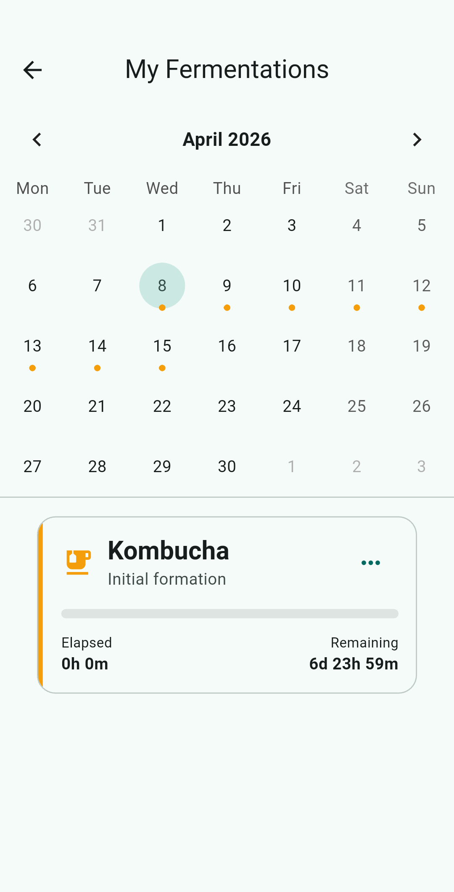

Ready to master your fermentation?
Join the open-source community and download Kefir Control today.
The minimalist, privacy-first tracker for your home fermentations. Get notified at the ideal moment and keep your grains healthy.

Designed for enthusiasts who value precision and simplicity.
Quick presets. Manual override for total control.
100% offline. No accounts, no trackers, no data collection. Your data stays on your device.
Live progress showing exactly which fermentation stage your kefir is in.
Try the actual mobile interface right here in your browser.
Join the open-source community and download Kefir Control today.